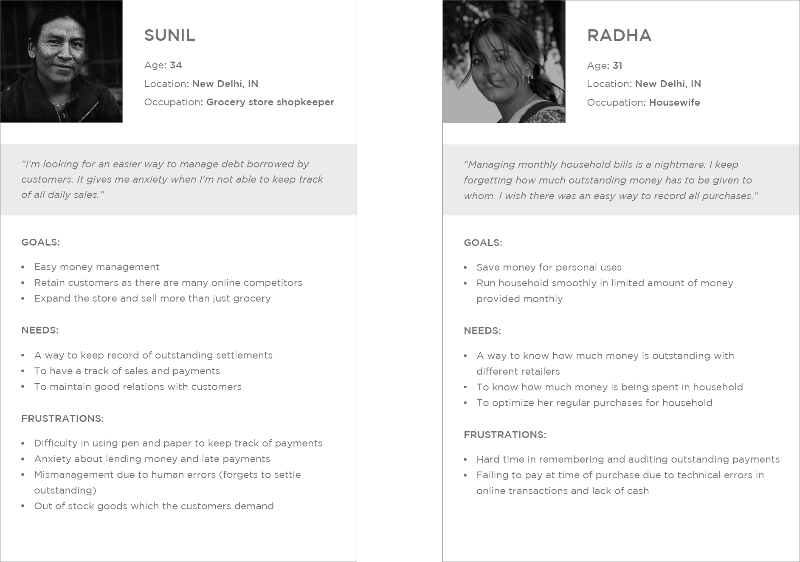
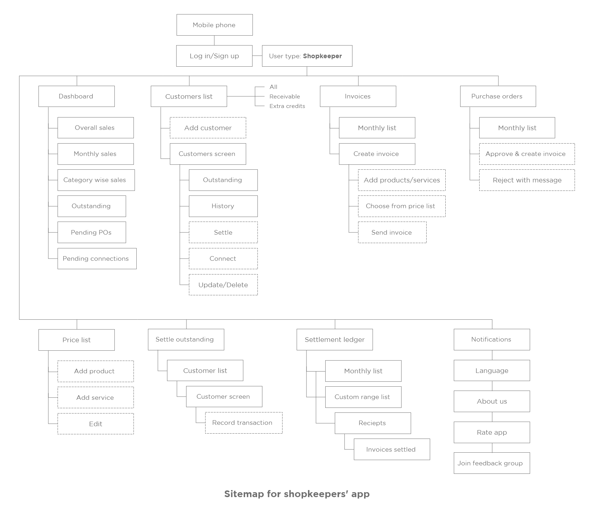
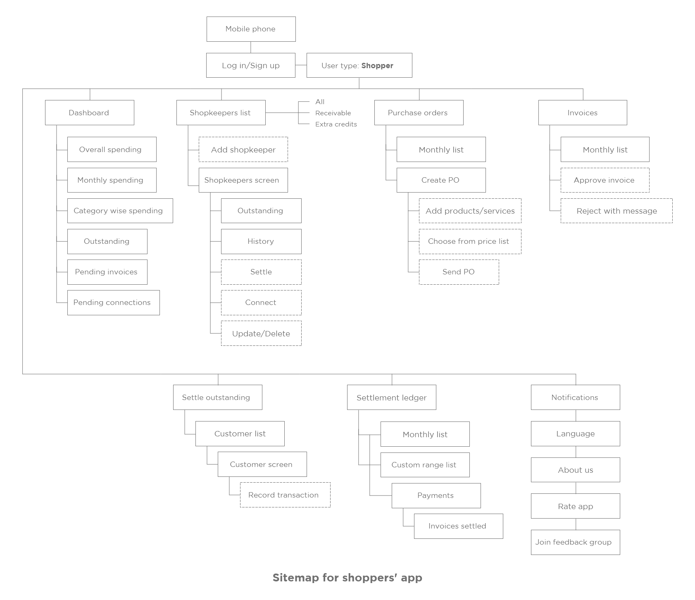
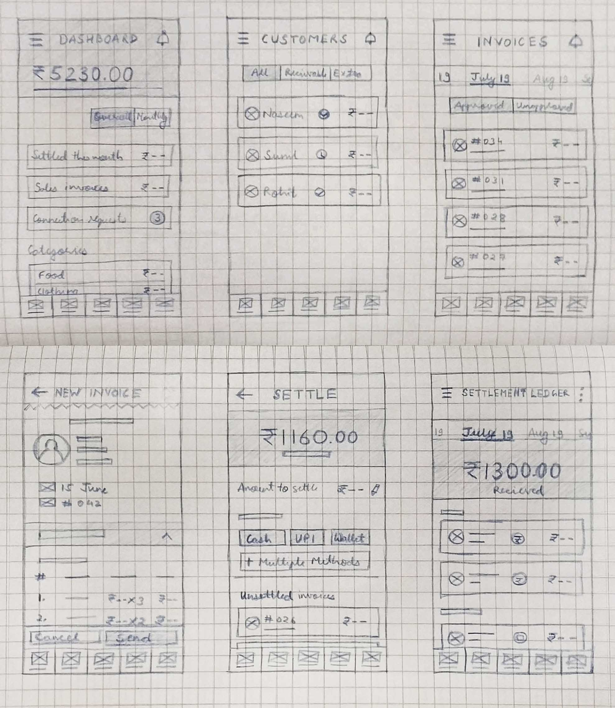
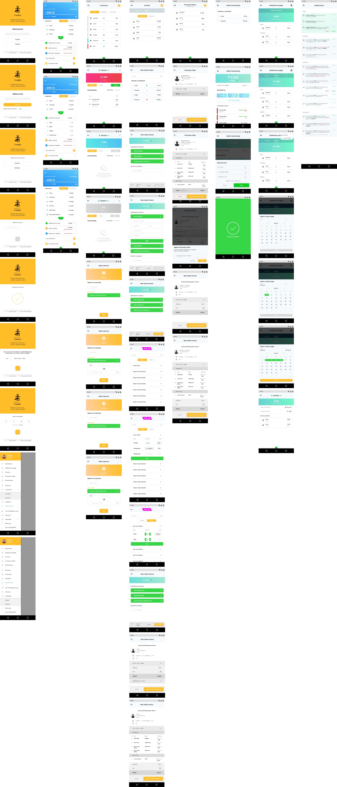
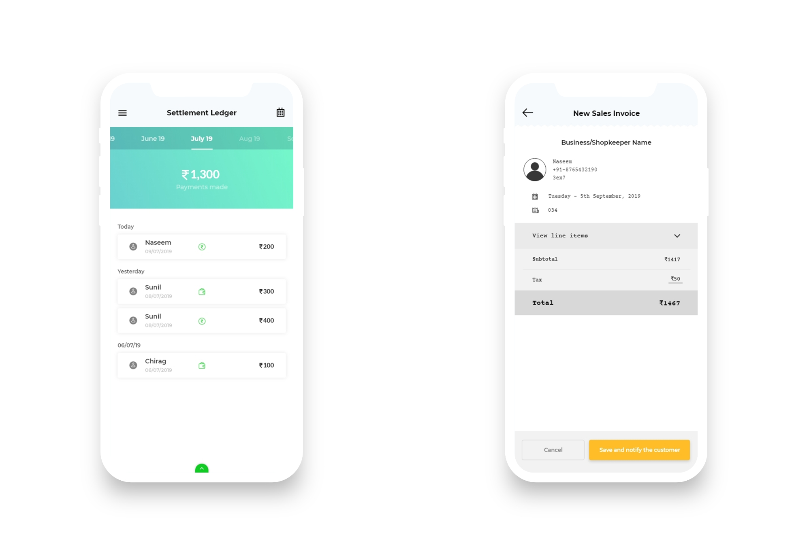

Credbo is a mobile application that helps shopkeepers and their customers to manage their finances. It allows them to keep a record of outstanding payments by sharing purchase orders and invoices. My role was to research, ideate, design and test the final UIs. I collaborated with the design and the development team along with the client.
Invosis Technologies, New Delhi, India
Retailers and shopkeepers (in general stores, grocery stores, etc) struggle to keep a record of money which they lend to their customers. The challenge was to create an application which enables easy money management for shopkeepers.
I used design thinking ideology to understand the needs and goals of users and design a solution while keeping a balance with business objectives and technical capabilities.
UX designer (User research, Interaction design, Visual design)
Adobe XD, Zeplin, Pen and Paper, Personas, Card sorting, Brainstorming, User flows, Sitemaps, Sketches, Wireframes, Prototypes, Guerilla testing
The objective was to understand how the shopkeepers manage their money, especially when there is outstanding money left with customers, and their pains and frustrations in the process.
1. Find the current methods used by shopkeepers to keep a track of outstanding payments by customers.
2. Understand how customers pay back the debt.
3. Determine the familiarity of shopkeepers with mobile applications and their ability to use these.
I conducted interviews with 3 shopkeepers and 3 customers to better understand the target users' perspectives and their needs. Following are the insights drawn from the information collected by empathy mapping and card sorting:
1. Shopkeepers keep a record of customers with debt on paper.
2. Shopkeepers have a hard time in recording sales and late payments done by customers.
3. Customers are unable to pay at the moment of purchase due to lack of cash with them and server errors in UPI payments.
4. Regular customers want to pay for their weekly or monthly purchases at once.
5. Shopkeepers have smartphones and are comfortable using common mobile applications.
By using the qualitative data collected from research, I created 2 personas which helped the team to better understand the user we're design for; Sunil (shopkeeper) and Radha (shopper). Sunil is a grocery store owner who runs the store all day. Radha is a housewife who shops from nearby stores for basic household amenities.

The ideation process began with a brainstorming session with the team while looking into the user personas and focusing on solving their problems according to their needs, in order to minimize their frustrations. We asked ourselves the 'how might we' questions for each need of target users in both the domains: shopkeepers and shoppers.
The following feature list was drawn after ideating solutions:
For shopkeepers:
1. Dashboard showing monthly sales and outstanding
2. Connect with customers
3. List of customers
4. Create and send invoices
5. List of invoices sent to customers
6. List of purchase Orders sent by customers
7. Approve/reject purchase orders
8. Price list for creating invoices
9. Settle outstanding
10. Settlement ledger
11. Notifications
12. Select local language
For shoppers:
1. Dashboard showing monthly spending and outstanding
2. Connect with shopkeepers
3. List of shopkeepers
4. Create and send purchase orders
5. List of POs sent to shopkeepers
6. List of invoices sent by shopkeepers
7. Approve/reject invoices
8. Price list for creating purchase orders
9. Settle outstanding
10. Settlement ledger
11. Notifications
12. Select local language
I created a site map of the app that included the above prioritized features. Two separate versions of the app were designed for shopkeeper and shopper, so were the sitemaps and wireframes.


Next, I drew low fidelity wireframes on paper, in order to get maximum freedom at the start of the UI designing process, and to iterate through the designs quickly.

After drawing and iterating by taking feedback from the team and client, I made high fidelity wireframes including all the features and UI requirements, such that it's intuitive and easy for both types of users.

I made a prototype of the app by connecting the screens using Adobe XD, considering all the possible use cases and scenarios which were noted in an excel sheet with the help of the design team. Next step was to conduct guerilla testing method. I asked 4 participants (2 shopkeepers and 2 shoppers) to test out the usability of the app by completing 4 different tasks:
Tasks:
1. Connect to a shopper/shopkeeper by sending them a connection request and accepting a connection request from them.
2. Create and send an invoice/PO to shopper/shopkeeper by adding prices of products and services manually as well as choosing from price list.
3. Approve a PO/invoice received from a shopper/shopkeeper.
4. Settle current month's outstanding with a shopper/shopkeeper by recording a cash receipt/payment.
Findings:
1. They were able to complete all the tasks.
2. A shopper was hesitant in sharing mobile number for connecting to shopkeeper.
3. While creating invoices and POs, the users were had difficulty in adding items from price list. Filling price and quantities for the same product available
in different formats had a complex UI.
4. Users navigated through notification screen while approving an invoice/PO or a connection request, rather than navigating from dashboard.
5. While settling an outstanding, users were confused and asked how to change the 'amount to settle', as the pencil edit icon wasn't intuitive to them.
Changes recommended:
1. Assign a unique 'code' to users while onboarding which can be used while connecting to other user instead of their mobile number to ensure privacy.
2. Simplify the UI while adding items in an invoice/PO through a price list by reducing the number of choices in the list for the same product. Allowing
users to select unit and quantity of the product will help.
3. Add a step to type 'amount to settle' immediately after choosing a shopper/shopkeeper while settling an outstanding against them.

I made the required changes in the prototype based on the insights from testing and uploaded the screens on Zeplin, for the developers to proceed further.
From this project I learned more about collaborating and working closely with stakeholders in making key decisions. Exercises like card sorting and brainstorming sessions were fun. I also enjoyed the usability testing part, as it made me feel confident about my designs when users were actually able to perform the tasks I asked them to.
The most difficult part of the design process was to list down all possible use case scenarios and design the UI accordingly. But with the help of the team, it became easy.
If there are any opportunities available in a full time UX designer role, do message me. :)